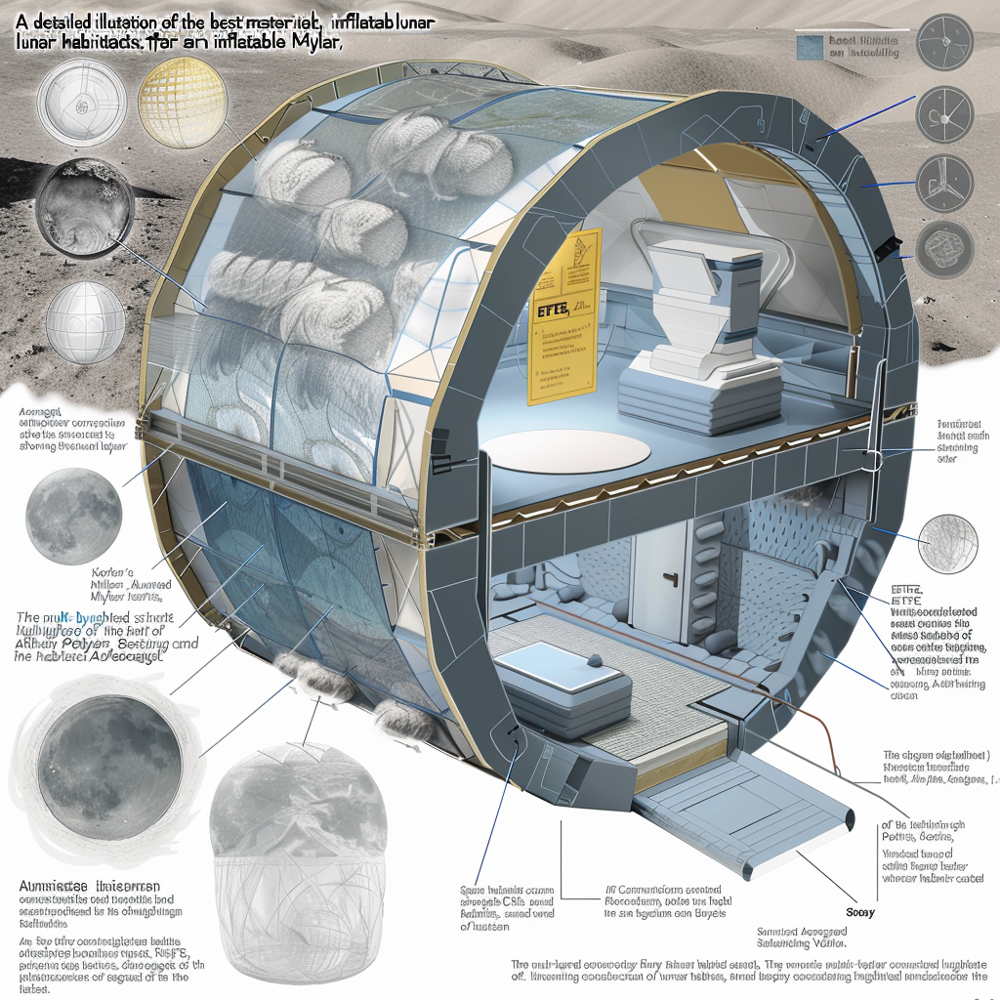

Base Layout

Base Layout
Above-Ground Portion
- Technology: Utilizes both pre-made deployable structures and 3D-printed structures.
- Advantages: Offers flexibility in design and construction speed, adapting to mission-specific needs and environmental conditions.
Underground Portion
- Preferred Technology: Inflatable structures combined with traditional construction techniques and 3D printing.
- Advantages: Provides enhanced radiation protection and thermal insulation, crucial for long-term human habitation. Additionally, it maximizes available space for essential functions and living quarters.
Key Features
- Radiation Protection: Integrates materials and design strategies to shield inhabitants from harmful cosmic radiation and solar particles.
- Thermal Control: Utilizes advanced insulation techniques to maintain stable internal temperatures despite extreme external conditions.
- Modular Design: Allows for scalability and adaptability, accommodating future expansion and technological upgrades.
- Integration of Systems: Ensures seamless operation of life support systems, energy production, waste management, and communication infrastructure.
- Safety and Emergency Preparedness: Incorporates redundant systems and emergency protocols to safeguard crew members during unforeseen events.